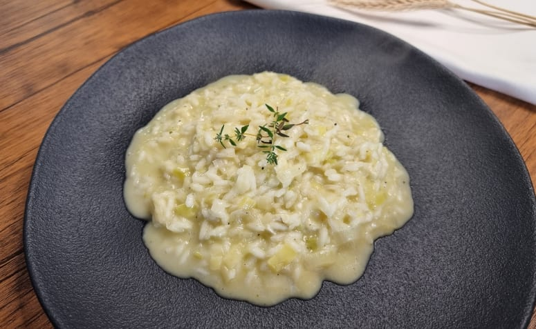

Voltar ao menu principal
Praticando 4 - Receita de bolo com listas
RISOTO DE QUEIJO BRIE COM ALHO PORÓ

Ingredientes
- 2 xícaras de arroz arbóreo
- 1 e 1/2 litros de caldo de legumes
- 1 cebola média ralada
- 1 colher de sopa de margarina
- 1 colher de sopa de azeite de oliva
- 1 xícara de vinho branco seco
- 100 g de alho poró fatiado
- 50g de queijo brie
- 1 caixa de creme de leite
- Sal a gosto
- Pimenta do reino a gosto
Modo de preparo
- Prepare o caldo de legumes de sua preferencia, pode ser com caldo em tabletes ou se preferir do próprio
legume cozido e reserve.
- Aqueça a margarina e o azeite em uma panela e refogue a cebola e o alho poró levemente, junte o arroz e
refogue por mais uns 5 minutos.
- Junte o vinho e mexa até começar a evaporar. Adicione aos poucos o caldo de legumes e mexa sempre.
- Não deixe secar totalmente, pois precisamos da cremosidade do amido que o arroz libera. Adicione o caldo
e mexa por cerca de 20 minutos.
- Quando o arroz estiver em uma consisencia al dente, abaixe o fogo e acrescente o queijo e mexa até
misturar, desligue o fogo, incorpore o creme de leite e sirva imediatamente.